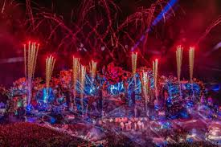

A trip to the unknown..
This is Tomorrowland

Tomorrowland is a large-scale annual electronic dance music festival held in Boom, Antwerp, Belgium. Taking place within De Schorre provincial recreational park, it debuted in 2005, from an idea conceived by brothers Manu and Michiel Beers.[4] Since then, Tomorrowland has become one of the best known music festivals in the world. It has won numerous accolades and awards, including being voted five times in a row as "best musical event of the year" at the International Dance Music Awards. It employs 80 people year-round for the organisation and 15,000 people during the event.
There are plenty of things that you can do there
- Experience World-Class DJ Performances – Dance to live sets from top DJs like Martin Garrix, Armin van Buuren, and David Guetta across stunning themed stages.
- Explore Themed Stages & Art Installations – Discover visually spectacular stages with immersive designs, light shows, and artistic decorations.
- Enjoy Global Cuisine – Taste delicious food from around the world at diverse food stalls, offering everything from gourmet dishes to festival snacks.
- Connect at DreamVille – If you’re camping, DreamVille offers after-parties, chill zones, and community vibes where you can meet festival-goers from all over the world.
Besides the fun, here are the rules you must follow
- Age Requirement: You must be 18 years or older to attend, with a valid ID for verification.
- No Re-entry Policy: Once you leave the festival grounds, re-entry is not allowed for that day.
- Prohibited Items: Drugs, sharp objects, glass bottles, and professional recording equipment are strictly forbidden.
- Respect the Environment: Keep the festival clean by using recycling bins and respecting nature around the venue.
Check for available tickets